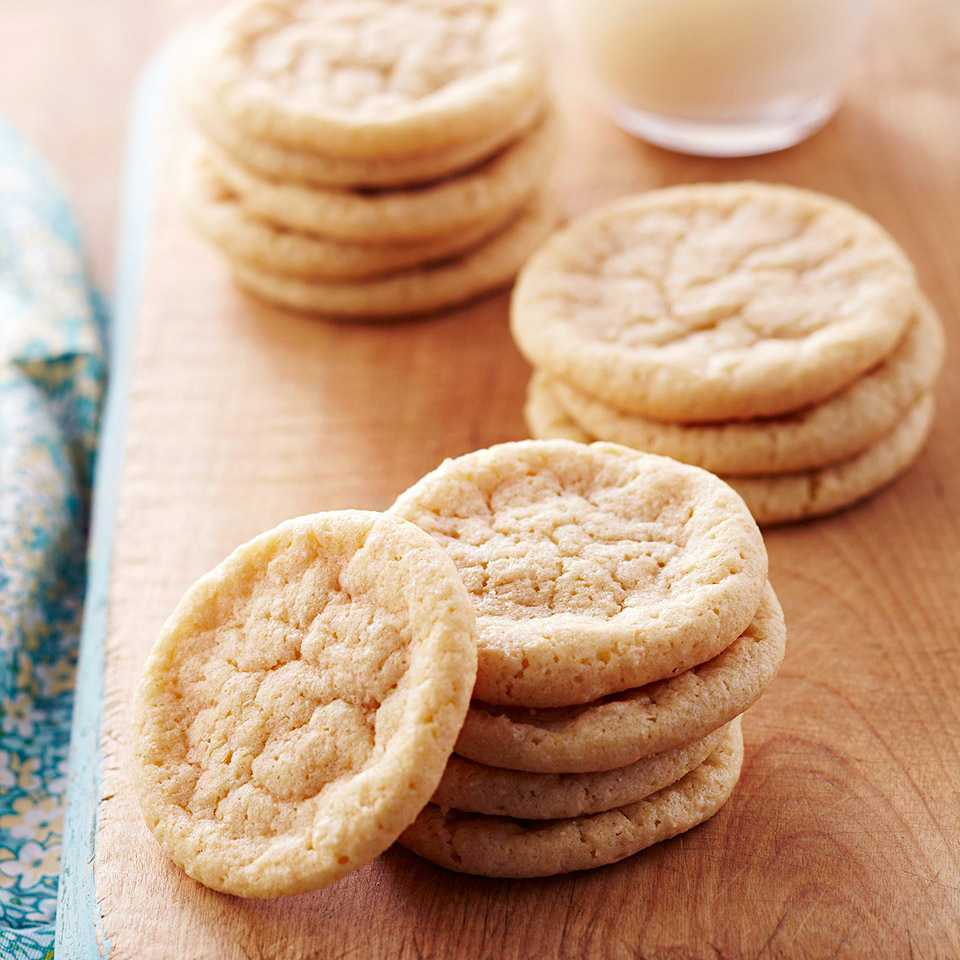

Cookies Recipes

Soft Sugar Cookies
These easy and classic cookies incorporate mild-tasting white whole-wheat
flour for extra fiber and nutrients.
Ingredient:
- ½ cup butter, softened
- 4 ounces cream cheese, softened
- 1 ¾ cups sugar (see Tips)
- 1 teaspoon baking soda
- 1 teaspoon cream of tartar
- ⅛ teaspoon salt
- 3 egg yolks
- ½ teaspoon vanilla
- 1 ¼ cups all-purpose flour
- ½ cup white whole-wheat flour
Steps:
- Preheat oven to 300 degrees F. In a large mixing bowl beat butter and cream cheese with an electric mixer on medium to high speed for 30 seconds. Add sugar, baking soda, cream of tartar, and salt. Beat mixture until combined, scraping sides of bowl occasionally. Beat in egg yolks and vanilla. Beat in as much of the all-purpose flour and white whole wheat flour as you can with the mixer. Stir in any remaining flour with a wooden spoon.
- Shape dough into balls that are 1-inch in diameter. Place balls 2 inches apart on ungreased cookie sheets.
- Bake for 14 to 16 minutes or until edges are set; do not let edges brown. Cool cookies for 1 minute on cookie sheet. Transfer cookies to a wire rack and let cool.